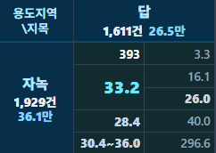

서두 · 학습목표
평균 하나로는 추정의 불확실성을 알기 어렵습니다
학생들의 통학 시간을 조사했더니 평균이 35분으로 나왔다고 가정해 보겠습니다.
이 결과를 보고 전체 학생의 평균 통학 시간도 정확히 35분이라고 말할 수 있을까요?
표본을 다시 뽑으면 평균이 달라질 수 있습니다. 따라서 평균 하나만 제시하면 추정값이 얼마나 불확실한지 알기 어렵습니다.
점추정은 모집단의 특성을 하나의 값으로 추정하는 방법입니다. 반면 구간추정은 추정의 불확실성을 고려해 일정한 범위를 제시합니다.
이번 장에서는 11장에서 배운 표준오차를 이용해 평균의 신뢰구간을 계산하고, 그 범위를 어떻게 해석해야 하는지 알아보겠습니다.
이번 장의 학습목표
- 점추정과 구간추정의 차이를 이해합니다.
- 표준오차를 이용해 평균의 신뢰구간을 계산합니다.
- 95% 신뢰구간이 의미하는 바를 알아봅니다.
- 신뢰수준과 표본수가 구간 폭에 미치는 영향을 이해합니다.
- 평균의 신뢰구간과 개별 관측값의 범위를 구별합니다.
이전 11장 「표준오차와 표본수」에서 표준오차를 살펴보았습니다.
핵심 이해
평균에 오차한계를 더하고 빼서 구간을 만듭니다
모집단의 평균을 추정하는 방법에는 크게 두 가지가 있습니다.
점추정은 표본평균처럼 하나의 숫자로 모집단 평균을 추정하는 방법입니다.
구간추정은 점추정값을 중심으로 일정한 범위를 설정해 추정의 불확실성을 나타냅니다.
평균의 양측 신뢰구간은 일반적으로 다음과 같은 형태로 계산합니다.
신뢰구간 = 표본평균 ± 오차한계
여기서 오차한계는 표준오차에 신뢰수준에 따른 임계값을 곱한 값입니다.
- 표본평균 x̄: 구간의 중심이 되는 점추정값입니다.
- 표준오차 SE: 표본을 반복해서 뽑을 때 평균이 얼마나 달라질 수 있는지를 나타냅니다.
- 임계값: 신뢰수준과 표본의 특성에 따라 정해지는 계수입니다.
- 오차한계: 점추정값에서 구간의 양 끝까지의 거리입니다.
모집단의 표준편차를 모르고 표본표준편차 s를 사용하는 경우, 정규모집단에 대한 평균의 신뢰구간은 다음과 같이 계산할 수 있습니다.
x̄ ± t × s/√n
여기서 t는 선택한 신뢰수준과 자유도에 따른 t분포의 임계값입니다.
쉽게 말하면 표본평균을 중심으로 표준오차와 신뢰수준을 고려해 구간의 폭을 정하는 것입니다.
이 계산은 적절한 표집 조건이 충족되어야 의미가 있습니다. 특히 독립성이 중요하며, 모집단이 정규분포가 아니라면 표본의 크기와 분포에 따라 근사 방법의 적절성을 검토해야 합니다.
t 임계값과 정확한 표기
모집단의 표준편차를 모르고 표본표준편차를 사용할 때는 일반적으로 t분포를 이용합니다.
자유도가 n−1인 양측 95% 신뢰구간의 임계값은 t분포의 상위 97.5% 분위수입니다.
표본이 충분히 크면 정규분포의 임계값인 약 1.96에 가까워집니다.
다만 소표본에서는 모집단의 정규성 등 신뢰구간 계산에 필요한 조건을 확인해야 합니다.
계산 예제
표준오차에 임계값을 곱해 구간을 계산합니다
11장에서 사용한 공통 학습 자료 30건으로 평균의 신뢰구간을 계산해 보겠습니다.
이 자료는 계산 연습을 위한 예시이며, 실제 부동산 거래 모집단을 대표한다고 검증된 자료는 아닙니다.
1. 평균과 표준오차
- 표본수 n = 30건
- 표본평균 x̄ ≈ 146.33만원/㎡
- 표본표준편차 s ≈ 81.53만원/㎡
- 추정 표준오차 SE ≈ 14.89만원/㎡
2. 임계값
자유도는 30−1=29입니다.
양측 95% 신뢰구간의 t 임계값은 약 2.045입니다.
3. 오차한계
오차한계 = t × SE
반올림 전 계산값을 사용하면 약 30.44만원/㎡입니다.
4. 신뢰구간
표본평균에서 오차한계를 빼고 더하면 다음과 같습니다.
95% 신뢰구간: 115.89~176.78만원/㎡
그림에서 가운데 점은 표본평균 146.33을, 양쪽 끝은 신뢰구간의 하한과 상한을 나타냅니다.
즉, 표본평균을 중심으로 양쪽 약 30.44만원/㎡의 범위를 설정한 것입니다.
다만 모집단 평균이 이 구간 안에 있을 확률이 95%라고 해석하는 것은 정확하지 않습니다.
95%는 이번에 계산된 특정 구간의 확률이 아니라, 구간을 만드는 절차의 장기적인 포함 비율을 의미합니다.
계산에 표시된 숫자는 반올림한 값입니다. 따라서 표시값만으로 다시 계산하면 소수점 이하에서 약간의 차이가 발생할 수 있습니다.
공통 학습 자료 30건 · 계산 결과와 초기 정적 반복표집 원자료. 버튼으로 새로 뽑은 실험 결과는 이 JSON과 다릅니다.
95%의 의미
같은 방법으로 구간을 반복해서 만들면 약 95%가 모평균을 포함합니다
95% 신뢰구간이라는 말은 어떤 의미일까요?
모집단의 평균이 정해져 있고, 같은 모집단에서 표본을 반복해서 추출한다고 가정해 보겠습니다.
표본을 뽑을 때마다 평균이 달라지므로 계산되는 신뢰구간도 달라집니다.
적절한 조건에서 95% 신뢰구간을 만드는 절차를 아주 많이 반복하면, 만들어진 구간 중 약 95%가 실제 모집단 평균을 포함합니다.
학습용 정규모형 N(100,20²) · μ=100, σ=20 · 매회 독립표본 25개 · 자유도 24 · t 임계값 약 2.064. 단위는 모형값입니다.
20개 모두 포함되거나 여러 개가 미포함되어도 결과를 그대로 표시합니다. 색상과 함께 선 모양·행 번호로 구분합니다. 주황 세로선은 μ=100입니다. 가로축은 이번 결과를 모두 담도록 자동 조정됩니다.
누적 실험 · 장기 포함률 확인하기
누적 횟수에 도달할 때까지 독립 표본을 추가합니다. 그래프는 최근 20개만 보여줍니다. 누적 비율이 정확히 95%가 되도록 조정하지 않습니다.
그림의 세로 기준선은 실제 모집단 평균 100입니다.
각 가로선은 새로 추출한 표본에서 계산한 신뢰구간을 나타냅니다.
- 가운데 점: 해당 표본에서 계산한 평균
- 가로선: 해당 표본의 95% 신뢰구간
- 파란색: 모집단 평균 100을 포함한 구간
- 빨간색: 모집단 평균 100을 포함하지 못한 구간
표본을 다시 뽑으면 평균과 구간의 위치가 달라집니다. 따라서 어떤 구간은 모평균을 포함하고, 어떤 구간은 포함하지 못할 수 있습니다.
중요한 것은 95%가 개별 구간에 붙는 확률이 아니라 구간 계산 방법의 장기적인 성질이라는 점입니다.
예를 들어 20개의 신뢰구간을 만들었다고 해서 반드시 19개가 모평균을 포함하는 것은 아닙니다. 20개 모두 포함하거나, 18개 이하만 포함할 수도 있습니다.
한 번 계산을 마친 특정 구간은 고정된 모평균을 포함하거나 포함하지 않습니다. 빈도주의 신뢰구간에서 95%라는 수치는 이러한 절차의 장기적인 포함률을 뜻합니다.
또한 신뢰구간은 개별 관측값의 95%가 들어가는 범위도 아닙니다.
신뢰수준과 구간 폭
신뢰수준을 높이면 구간은 넓어집니다
같은 자료를 사용하더라도 신뢰수준을 다르게 설정하면 신뢰구간의 폭이 달라집니다.
예를 들어 신뢰수준을 90%, 95%, 99%로 높이면 임계값이 커지고, 이에 따라 구간도 넓어집니다.
공통 학습 자료 30건을 기준으로 비교하면 다음과 같습니다.
| 신뢰수준 | 신뢰구간(만원/㎡) |
|---|---|
| 90% | 121.04~171.62 |
| 95% | 115.89~176.78 |
| 99% | 105.30~187.36 |
세 구간의 중심은 모두 같은 표본평균 146.33입니다.
하지만 신뢰수준이 높아질수록 양쪽 끝이 더 멀어집니다.
왜 그럴까요?
더 높은 비율로 모집단 평균을 포함하는 절차를 만들려면, 일반적으로 더 넓은 구간이 필요하기 때문입니다.
신뢰수준이 높다는 것은 추정값이 더 정확해졌다는 뜻은 아닙니다.
자료와 표본평균은 그대로이고, 선택한 신뢰수준에 따라 구간의 폭만 달라진 것입니다.
따라서 신뢰수준은 분석 목적과 결과를 활용하는 상황에 맞게 선택해야 합니다.
여러 구간을 동시에 읽을 때
하나의 모집단 평균에 대해 여러 개의 구간을 계산하거나, 여러 집단의 평균을 동시에 비교하는 경우에는 해석에 주의해야 합니다.
각 구간이 개별적으로 95% 신뢰수준을 갖더라도 모든 구간이 동시에 모수를 포함할 확률이 95%인 것은 아닙니다.
여러 비교를 함께 판단할 때는 다중비교에 따른 보정이 필요할 수 있습니다.
표본수와 구간 폭
자료의 흩어짐이 같다면 표본수가 많을수록 구간은 좁아집니다
표본수가 늘어나면 신뢰구간은 어떻게 달라질까요?
11장에서 배운 것처럼 표본수 n이 증가하면 평균의 표준오차 s/√n은 일반적으로 작아집니다.
따라서 자료의 흩어짐과 신뢰수준이 같다면 표본수가 많을수록 신뢰구간도 좁아집니다.
아래는 평균과 표준편차를 고정하고 표본수만 바꾼 가상 비교입니다.
| 표본수 | 95% 신뢰구간(만원/㎡) |
|---|---|
| 10건 | 88.01~204.66 |
| 30건 | 115.89~176.78 |
| 120건 | 131.60~161.07 |
세 구간의 중심은 같지만 표본수가 많아질수록 구간이 좁아집니다.
여기에는 두 가지 효과가 반영됩니다.
첫째, 표본수가 많아지면 표준오차가 작아집니다.
둘째, 표본수가 커지면서 t분포의 임계값도 정규분포의 임계값에 가까워집니다.
다만 이 그래프는 다른 조건을 고정한 계산 예시입니다.
실제로 거래자료를 더 수집하면 표본평균과 표준편차도 달라질 수 있습니다. 따라서 자료가 늘어날 때마다 구간이 반드시 좁아진다고 보장할 수는 없습니다.
또한 같은 거래를 복사하거나 서로 강하게 관련된 관측값을 추가하는 것은 독립적인 새 정보를 확보하는 것과 다릅니다.
다른 범위와 구별
평균의 신뢰구간은 개별 거래가격의 범위가 아닙니다
통계에서는 여러 종류의 범위를 사용합니다. 하지만 각 범위가 설명하는 대상은 서로 다릅니다.
① 평균의 신뢰구간
모집단 평균을 추정하기 위한 구간입니다.
표본에서 계산한 평균과 표준오차를 이용하며, 정해진 신뢰수준에서 계산 절차의 장기적인 포함률을 해석합니다.
② 사분위 범위
자료를 크기순으로 정렬했을 때 제1사분위수(Q1)부터 제3사분위수(Q3)까지의 범위입니다.
관측값 분포의 가운데 50%가 차지하는 구간입니다.
③ 최솟값과 최댓값
실제 표본에서 관측한 값의 가장 낮은 값과 높은 값을 나타냅니다.
자료의 전체 관측 범위를 보여줍니다.
④ 예측구간
통계모형을 이용해 새로운 관측값이 나타날 범위를 추정합니다.
평균 자체의 불확실성뿐 아니라 개별 관측값의 변동성도 고려하므로, 동일한 모형·조건·신뢰수준에서 평균의 신뢰구간보다 일반적으로 넓습니다.
이처럼 평균을 추정하는 범위와 개별 거래가격의 분포를 나타내는 범위는 서로 다릅니다.
표본수가 많아져 평균의 신뢰구간이 좁아지더라도 개별 부동산의 가격 차이는 여전히 클 수 있습니다.
예측구간·허용구간·베이지안 구간
예측구간은 새로운 관측값의 불확실성을 나타냅니다.
허용구간은 모집단 관측값의 일정 비율을 포함하도록 설계한 구간입니다.
베이지안 신용구간은 모수에 대한 사후확률분포를 바탕으로 구성합니다.
서로 다른 통계적 질문에 답하는 개념이므로, 평균의 빈도주의 신뢰구간과 구분해야 합니다.
가정과 보고
신뢰구간이 좁다고 반드시 좋은 추정은 아닙니다
신뢰구간의 폭은 추정의 정밀도를 판단하는 데 유용합니다.
하지만 좁은 구간이 항상 정확하고 신뢰할 만한 결과를 의미하는 것은 아닙니다.
예를 들어 특정 지역이나 가격대의 거래만 수집했다면, 표본수가 많더라도 전체 시장과 다른 평균을 추정할 수 있습니다.
이처럼 표본에 편향이 있으면 신뢰구간을 좁게 계산하더라도 그 문제가 저절로 해결되지는 않습니다.
실제 부동산 거래자료를 분석할 때는 다음 사항도 확인해야 합니다.
- 표본의 대표성: 분석하려는 시장을 적절히 반영하고 있는가?
- 독립성: 같은 거래가 중복되거나 관측값 사이에 의존성이 존재하는가?
- 결측과 이상치: 누락된 거래나 극단적인 가격이 결과에 영향을 주는가?
- 계산 방법: 산술평균, 가중평균, 비율 등 통계량에 적합한 방법을 사용했는가?
특히 가중평균이나 비율, 중앙값 등을 분석할 때는 산술평균에 사용하는 신뢰구간 공식을 그대로 적용할 수 없습니다.
또한 부트스트랩은 자료를 반복적으로 재표집하는 유용한 방법이지만, 원래 표본의 편향이나 관측값 사이의 의존성을 자동으로 해결해 주지는 않습니다.
통계 결과를 보고할 때는 추정 대상, 표본수, 점추정값, 신뢰구간, 신뢰수준, 계산 방법과 주요 가정을 함께 제시하는 것이 좋습니다.
두 집단의 신뢰구간이 겹친다는 이유만으로 평균에 차이가 없다고 결론 내려서도 안 됩니다.
집단 간 차이를 판단하려면 평균 차이 자체의 신뢰구간이나 적절한 통계적 검정을 사용해야 합니다.
확인 문제
신뢰구간이 답하는 질문부터 확인해 보세요
- 95% 평균 신뢰구간에는 관측값의 95%가 포함될까요?
답과 해설
아닙니다.
평균의 신뢰구간은 모집단 평균을 추정하기 위한 구간입니다.
개별 관측값의 95%가 포함되는 범위를 나타내는 것은 아닙니다.
- 같은 표본에서 신뢰수준을 95%에서 99%로 높이면 구간은 어떻게 될까요?
답과 해설
일반적으로 더 넓어집니다.
신뢰수준을 높이면 더 큰 임계값을 사용하므로 오차한계가 증가합니다.
다만 표본의 평균과 표준편차가 달라진 것은 아닙니다.
- 95% 신뢰구간을 20개 만들면 반드시 19개가 모평균을 포함할까요?
답과 해설
아닙니다.
95%는 같은 절차를 매우 많이 반복했을 때의 장기적인 포함률입니다.
20개 중 실제로 몇 개가 모평균을 포함하는지는 달라질 수 있습니다.
- 편향된 자료라도 표본수를 늘려 신뢰구간을 좁히면 믿을 만할까요?
답과 해설
그렇지 않습니다.
편향된 표본에서 얻은 신뢰구간은 폭이 좁더라도 분석 대상 모집단의 평균을 적절히 추정하지 못할 수 있습니다.
표본수뿐 아니라 자료의 대표성과 계산 조건도 함께 확인해야 합니다.
CH2 Macro에서 읽기
평균과 신뢰구간을 함께 살펴보세요
CH2 Macro의 토지 기본통계 화면에서 특정 집단의 평균 거래단가와 신뢰구간을 확인할 수 있습니다.
예를 들어 화면에 다음과 같은 값이 표시되어 있다고 가정해 보겠습니다.
- 평균 단가: 33.2만원/㎡
- 평균의 95% 신뢰구간: 30.4~36.0만원/㎡
- 거래 건수: 393건

평균 33.2만원/㎡는 선택한 거래자료를 하나의 값으로 요약한 점추정값입니다.
30.4~36.0만원/㎡는 해당 평균을 추정하기 위해 계산한 95% 신뢰구간입니다.
표시된 값을 기준으로 보면 평균에서 아래쪽으로 약 2.8만원/㎡, 위쪽으로 약 2.8만원/㎡의 범위가 설정되어 있습니다.
하지만 이는 개별 토지의 적정가격이 30.4~36.0만원/㎡라는 뜻이 아닙니다.
개별 거래단가의 분포는 별도로 살펴봐야 합니다.
화면에 함께 표시된 사분위수와 최솟값·최댓값은 개별 거래가격의 분포를 이해하는 데 도움이 됩니다.
또한 신뢰구간이 좁다는 이유만으로 표본이 전체 시장을 대표한다고 단정할 수는 없습니다.
CH2 Macro에서 지역별 평균을 비교할 때는 분석 기간, 부동산 유형, 지역, 이상치 처리 조건 등을 함께 확인하는 것이 좋습니다.
특히 평균의 신뢰구간은 미래 부동산 가격이 들어갈 범위나 개별 물건의 감정평가액을 의미하지 않습니다.
- 점추정값: 평균 33.2만원/㎡
- 평균의 95% 신뢰구간: 30.4~36.0만원/㎡
- 제1~제3사분위수: 16.1~40.0만원/㎡
- 최솟값~최댓값: 3.3~296.6만원/㎡
- 거래 건수: 393건 · 표시 표본표준편차: 28.4만원/㎡
실제 화면의 계산 방법과 확인 범위
기본통계 코드는 같은 분석 대상의 반올림 전 단가로 산술평균, n−1을 사용하는 표본표준편차, 유효 건수를 구합니다. 평균 ± t₀.₉₇₅,ₙ₋₁ × s/√n으로 95% 신뢰구간을 계산한 뒤 소수 첫째 자리로 반올림합니다.
기본통계 사전집계는 정상 거래, 해제 제외, 단가가 있는 거래를 사용합니다. 이상치 제외를 선택하는 유료 조회 경로는 제외 후 남은 자료로 평균·표준편차·건수·신뢰구간을 함께 다시 계산합니다. 기본통계에 이상치가 자동으로 제외된다고 해석하지 않습니다.
캡처의 반올림된 평균 33.2, 표준편차 28.4, n=393을 넣으면 양측 오차한계는 약 2.82로, 표시 구간 30.4~36.0과 일치하는 수준입니다. 다만 캡처 당시 원거래 자료와 필터 상태를 확인하지 못하여, 당시의 반올림 전 구간을 완전히 재현한 것은 아닙니다.
이 산식은 단순 독립표본을 전제로 합니다. 실제 거래의 의존성, 수집 편향이나 대표성을 자동으로 보정하지 않습니다.
결론 · 학습 요약
추정값과 구간, 신뢰수준을 함께 읽으세요
점추정은 모집단의 특성을 하나의 값으로 나타냅니다. 신뢰구간은 여기에 표본추정의 불확실성을 반영합니다.
같은 평균이라도 자료의 흩어짐과 표본수, 신뢰수준에 따라 구간의 폭은 달라질 수 있습니다.
이번 장에서 기억할 내용
- 점추정과 구간추정: 점추정은 하나의 값, 신뢰구간은 모집단의 모수를 추정하기 위해 계산한 범위입니다.
- 신뢰구간 계산: 평균의 신뢰구간은 표본평균 ± 임계값 × 표준오차의 형태로 계산합니다.
- 95%의 의미: 적절한 조건에서 같은 절차를 반복하면 만들어진 구간의 약 95%가 고정된 모평균을 포함합니다.
- 신뢰수준과 구간 폭: 다른 조건이 같다면 신뢰수준이 높을수록 구간은 넓어집니다.
- 표본수와 구간 폭: 자료의 흩어짐과 표집 조건이 같다면 표본수가 많을수록 구간은 일반적으로 좁아집니다.
- 해석의 한계: 평균의 신뢰구간은 개별 거래가격의 범위가 아니며, 표본의 대표성까지 보장하지 않습니다.
다음 13장 「가설검정과 p값」에서는 표본에서 관찰한 결과를 바탕으로 통계적 가설을 판단하는 방법을 알아보겠습니다.
참고자료
- NIST/SEMATECH: Confidence Limits for the Mean — 평균 구간의 산식과 해석.
참고자료의 기존 확인일: 2026-10-07. 공통 자료와 초기 정적 예제의 임계값은 SciPy로 계산했습니다. 그림 2의 실험은 N(100,20²)에서 새 표본을 추출하고 각 표본의 s와 자유도 24로 t 구간을 계산합니다.